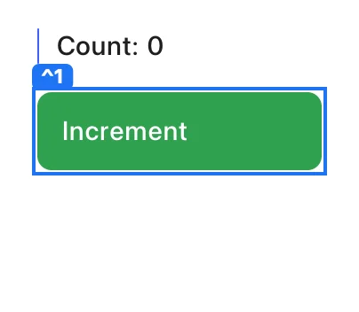
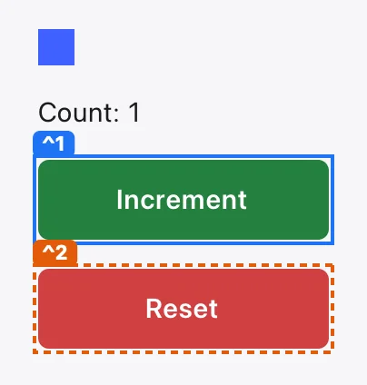
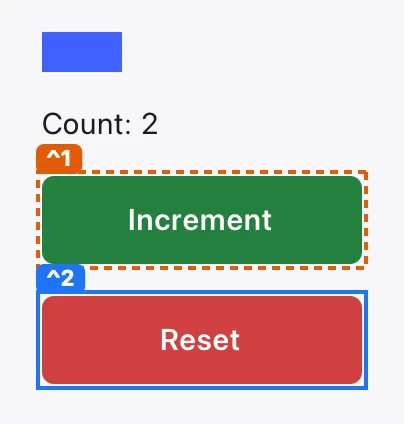
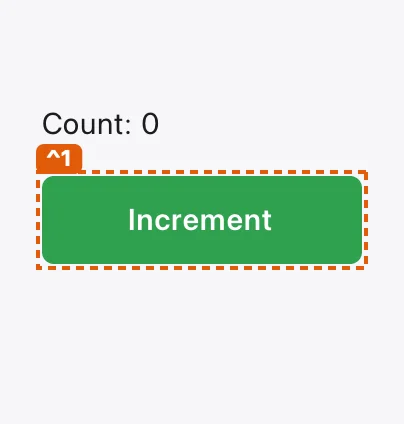
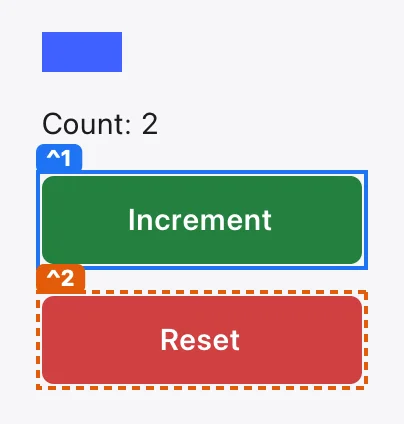
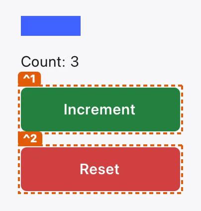

Counter · place ^3
Counter window
The spike's window: a bar as long as the count, Increment, and Reset when there is something to reset.
seen
Moves 2
Does
Press Increment.
SeesThe count goes up by one.
- proved
- 1 theorem (sound press), standard axioms only.
- not fuzzed
- The app is fuzzed at the model level only (it has no
Appyet), where a move has no checks of its own: presence and pressability need a frame. - not tested
- Counter has no conformance generator yet (
tools/conformance/lean/Conformance/Apps/Counter.lean). - seen
- Pressed in the capture: before and after.
1 theorem
✓
Counter.increment.press.sound sound presslean/Examples/Counter.lean:33 · Counter.increment · ledger: active


Does
Press Reset.
SeesThe count is zero, and Reset disappears.
- proved
- 1 theorem (sound press), standard axioms only.
- not fuzzed
- The app is fuzzed at the model level only (it has no
Appyet), where a move has no checks of its own: presence and pressability need a frame. - not tested
- Counter has no conformance generator yet (
tools/conformance/lean/Conformance/Apps/Counter.lean). - seen
- Pressed in the capture: before and after.
1 theorem
✓
Counter.reset.press.sound sound presslean/Examples/Counter.lean:41 · Counter.reset · ledger: active


Flows 2
Does
Press Increment three times.
SeesThe count is three.
Witness- proved
- 2 theorems (live, reaches), standard axioms only.
- not tested
- Counter has no conformance generator yet (
tools/conformance/lean/Conformance/Apps/Counter.lean). - seen
- Its 3 steps replayed in the capture, each on the control it names.
2 theorems
✓
Counter.countToThree.live live✓
Counter.countToThree.reaches reacheslean/Examples/Counter.lean:53 · Counter.countToThree · ledger: active


Does
Count up, then press Reset.
SeesThe count is back to zero and Reset is gone.
Witness- proved
- 2 theorems (live, reaches), standard axioms only.
- not tested
- Counter has no conformance generator yet (
tools/conformance/lean/Conformance/Apps/Counter.lean). - seen
- Its 3 steps replayed in the capture, each on the control it names.
2 theorems
✓
Counter.startOver.live live✓
Counter.startOver.reaches reacheslean/Examples/Counter.lean:59 · Counter.startOver · ledger: active